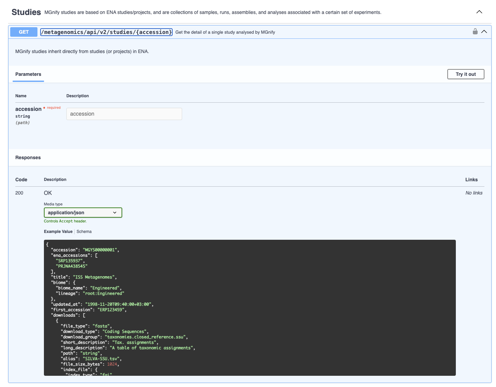

RESTful API
With the rapid expansion in the number of datasets deposited in MGnify, it has become increasingly important to provide programmatic access to the data for cross-database complex queries.
API Overview
Current version
Current API version is v2.
The API v1 was deprecated in June 2026. It will be turned off no earlier than September 1st 2026, but will serve frozen data that does not include MGnify V6 analyses.
Base URL
The base address to the API is https://www.ebi.ac.uk/metagenomics/api/v2/.
Browsing the API root (i.e. going to /api/v2 in a web browser) shows a human-readable, browsable, interactive documentation page for the API. This is the easiest way to explore it.
To programatically explore it, e.g. to help instruct a large-language model to use it, an OpenAPI JSON is provided:
curl -X GET "https://www.ebi.ac.uk/metagenomics/api/v2/openapi.json"There are several easy-to-use top-levels resources, such as studies, samples, runs, biomes, and analyses. For example https://www.ebi.ac.uk/metagenomics/api/v2/studies retrieves a list of all studies, while https://www.ebi.ac.uk/metagenomics/api/v2/studies/MGYS00010397 retrieves a single study, with the accession MGYS00010397. The samples contained within this study can be retrieved using the relationship URL: https://www.ebi.ac.uk/metagenomics/api/v2/studies/MGYS00010397/samples/.
HTTP methods
The API provides mostly read-only access to all resources, that means only HTTP GET method can be used with exception of the authentication endpoint and some search endpoints that accept a query sequence.
Responses
Responses to list endpoints (like /studies/, /genomes/ etc) return data following a schema like:
"count": 10,
"items": [...]The same is true of detail -> list relationship endpoints (like /studies/MGYS00010397/samples/ for example).
Responses to a detail endpoint (like /studies/MGYS00010397, /analyses/MGYA01020362 etc) return data following a schema appropriate for the data type, e.g. for analysis:
{
"experiment_type": "Metatranscriptomic",
"study_accession": "MGYS000000001",
"accession": "MGYA000000001",
...
}The schema of a detail endpoint often includes more fields than when the same object appears in a list. For examples, an analysis’s downloads field is not shown in /analyses/ but is in /analyses/MGYA01020362.
The schema for all responses is available from the Open API spec, and this is also shown - often with example data - in the browsable API.

Pagination
As some queries can result in a large response, the API supports pagination, using a page number and size of results per page as query parameters. Request that return multiple items is paginated to 20 items by default, and can be increased up to 100:
curl -X GET "https://www.ebi.ac.uk/metagenomics/api/v2/studies?page_size=100"The "count" given at the top-level of a list endpoint’s JSON response, combined with the page_size requested, allows you to compute how many pages need to be requested. For each page, use a ?page=x query parameter, e.g.:
curl -X GET "https://www.ebi.ac.uk/metagenomics/api/v2/studies/?page=2&page_size=100"This pagination can be interated.
Parameters
In APIv2, there are very few query parameters for filtering lists: instead the API returns fast responses for entire lists which can be easily filtered downstream. A limited number of search filters are supported, though, for very common queries. For example to search studies by their title including the words space station:
curl -X GET "https://www.ebi.ac.uk/metagenomics/api/v2/studies/?search=space+station"or genomes with taxa including Rickettsiales:
curl -X GET "https://www.ebi.ac.uk/metagenomics/api/v2/genomes/?search=Rickettsiales"Links
Some endpoints in the API schema include “Links”, which are not URLs, but rather other endpoint in the API (or “operations”) that get related data. These are part of the Open API specification, and are mostly useful to programmatic clients like large-language models. For example, they specify how one can retrieve the genome-catalogue mentioned in the detail endpoint response from a genome.
Errors
There are three possible types of client errors on API calls:
400 Bad requests, usually a bad query parameter.
401 Unauthorized, usually trying to access private analyses with the wrong credentials.
404 Not found, usually a broken link or a dataset that has been suppressed.
403 Authentication failed.
Examples
Download all taxonomy files from a metagenomic analyses (MGYA)
This example uses common command-line tools curl and jq
curl "https://www.ebi.ac.uk/metagenomics/api/v2/analyses/MGYA01020362" | jq '.downloads[] | select(.download_group | startswith("taxonomies.")) | .url' | xargs -n1 curl -OAccess MGnify from Python
We have a Python client, MGnipy, designed to streamline access to the APIv2 from Python.
Documentation for MGnipy can be found at mgnipy.mgnify.org/.
Citation
@online{2026,
author = {, MGnify},
title = {RESTful {API}},
date = {2026-06-01},
url = {https://docs.mgnify.org/src/docs/api.html},
langid = {en}
}